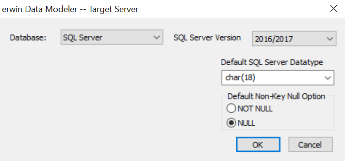
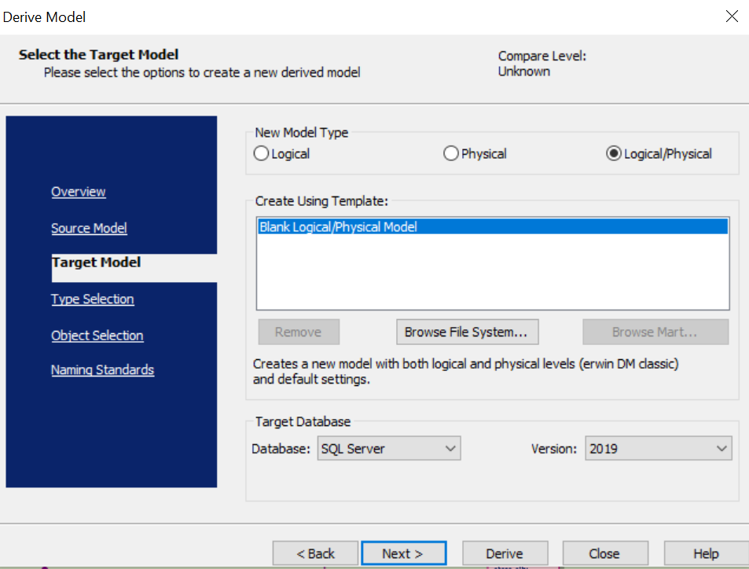
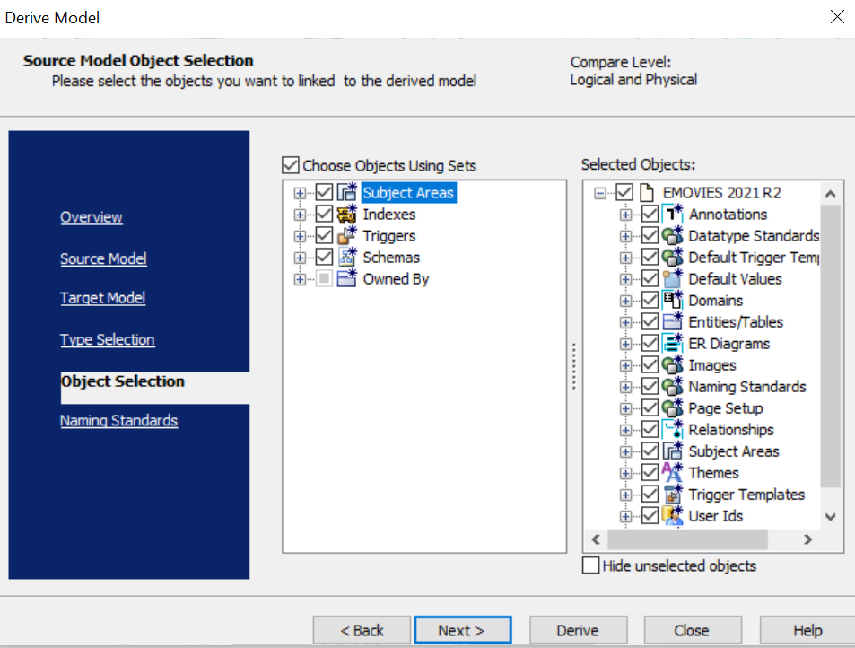
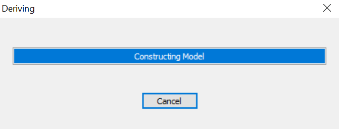
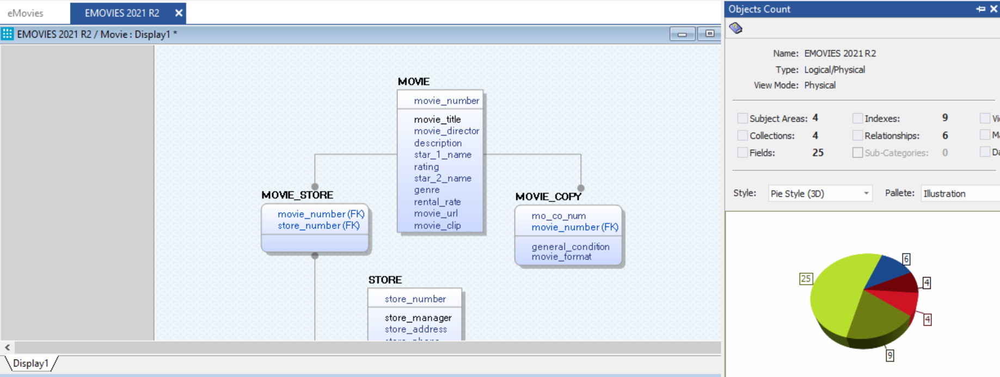

You can migrate your relational models to ArangoDB models in two ways:
This topic walks you through the steps to migrate a SQL Server model to an ArangoDB model.
To migrate by changing the target database, follow these steps:
Open your relational model in erwin Data Modeler (DM).
Ensure that you are in the Physical mode.
For example, the following image uses the sample eMovies.erwin model. In the Objects Count pane, note the number of tables, columns, and relationships.On the ribbon, click Actions > Target Database or on the status bar, click the database name.
The erwin Data Modeler -- Target Server screen appears.

To migrate by deriving a model, follow these steps:
Open your relational model in erwin Data Modeler (DM).
Ensure that you are in the Physical mode.
For example, the following image uses the sample eMovies.erwin model. In the Objects Count pane, note the number of tables, columns, and relationships.On the ribbon, click Actions > Design Layers > Derive New Model.
The Derive Model screen appears. By default, the Source Model is set to your current model.

In the Database drop-down list, select ArangoDB.
Click Next.
If the Type Resolution screen appears, click Finish.
The Type Selection section appears.Select the types of objects that you want to derive into the target ArangoDB model.
Click Next.
The Object Selection section appears. Based on the object types you selected in step 5, it displays a list of objects.

Select the objects that you want to derive into the target ArangoDB model.
Click Derive.
The model derivation process starts.

Once the conversion is complete, the existing model in migrated to a NoSQL database.

In the Objects Count pane, note that instead of tables and columns, we now have collections and fields. The migration process converts and merges multiple tables, columns, and relationships to the ArangoDB format.